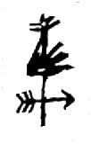

FairweatherEditions
About Us

Cy DeCosse - Photographer
Cy brings his background of artist and art director to the art of photogaphy. His love of photography began in Florence, Italy as a Fulbright student. His learning continued as he collaborated with many of America’s best photographers in his career as an agency Art Director. Cy believes in close, intimate images that show ordinary things in a surprising new light. He paints backgrounds that “float” the subject in a world of its own. Alternative processes give his images a look that is different and approriate to the moment. Cy DeCosse Photography Shows & Articles
Keith Taylor - Printer
Keith has been printing for Cy DeCosse for over 15 years. Keith hails from London U.K. where he printed for many of England’s top photographers. His specialty is historic alternative processes, platinum-palladium, polymer-photogravure and 3-color gum dichromate. Keith brings an amazing technical expertise and print quality to Cy’s works. (www.keithtaylorphoto.com)
Bernie Maehren - Manager
Bernie is the “go-to” person at the Cy DeCosse studio. She manages the purchases and records of all numbered editions. She maintains up-to-date files and availability of all images in the collections and keeps track of where they are, whether they are at a gallery, a museum or in our own studio files. In addition she handles layout and graphic design issues and quote research as needed.